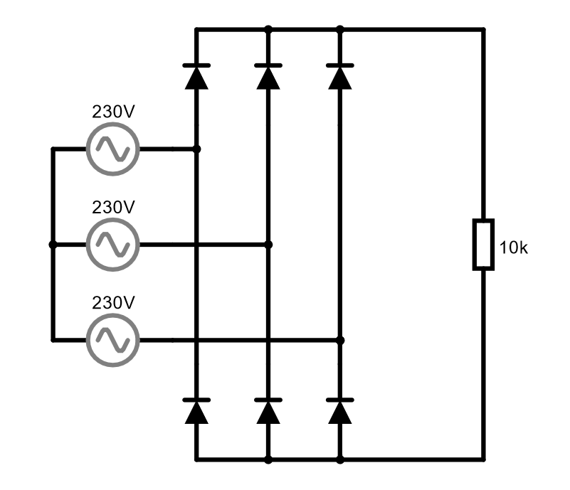

2. The rectifier diode¶
Rectifier diodes are specialized for converting alternating current into direct current needed by most electronic devices.
These diodes can rectify the alternating current that reaches our homes, with relatively high voltages (up to 311 volts peak for an alternating voltage of 230 effective volts).
They are also found in high-frequency transformers that use almost all power supplies for computers, smartphone and tablet chargers, televisions, etc.
Half wave rectifier diode¶
This is the simplest scheme that can be used to convert alternating current to direct current. This rectifier only allows the positive half cycle of the alternating voltage to pass and blocks the negative half cycle.
This scheme has the drawback that the output current is pulsating and half of the input voltage is wasted.
Full wave rectifier diode¶
This scheme manages to transform both the positive half-cycles and the negative half-cycles of the input voltage into positive voltage at the output.
In order to function, it uses two diodes for each alternating current line. In three-phase systems, with three voltage lines, six diodes in total are used to rectify the voltage.
In the following simulations you can see two diode configurations. Both are electrically equivalent and only differ in the position of the diodes in the drawing.
Rectifier diode with filter¶
The full wave rectifier manages to take advantage of all the alternating voltage, but there are still voltage valleys in which the output is zero. If we want to have direct voltage at the output, we can use a capacitor that will store enough electrical charge to be able to power the output load during the time that the rectified voltage has low voltage values.
This is a circuit widely used in the power supplies of all types of electronic devices. It is interesting to see how the current absorbed by the AC generator is a pulsating current. This produces distortions in the current of the electrical power network by adding the effect of multiple electronic devices in many homes.
Exercises¶
Draw a half-wave rectifier circuit that rectifies the 230-volt alternating voltage and feeds a 100-ohm resistor.
Draw the waveform of the voltage across the resistor below the circuit.
Remember that in the simulator the green graph represents the voltage and the yellow graph represents the current.
Draw a full-wave rectifier circuit based on the values from the previous exercise.
Draw the waveform of the voltage across the resistor below the circuit.
In the circuit simulator, make a full-wave rectifier for a three-phase line like the one shown in the following image.
The generator above should have a 'Phase Shift' of 0 degrees (no need to change it). The middle generator should have a 'Phase Shift' of 120 degrees. The generator below should have a 'Phase Shift' of 240 degrees.
Draw the waveform of the output voltage across the resistor. What can you say about the waveform compared to the waveform of a single-phase circuit like the one in the previous exercise?
Modify the capacitor of the 'rectifier diode with filter' circuit.
Change the value of the capacitor to 50uF. What changes occur in the output voltage and current of the generator?
Change the value of the capacitor to 800uF. What changes occur in the output voltage and current of the generator?
Taking into account that a large capacitor produces less variation in the output voltage and that this is desirable. Why do you think large capacitors are not used in these types of circuits?
{kind=link}